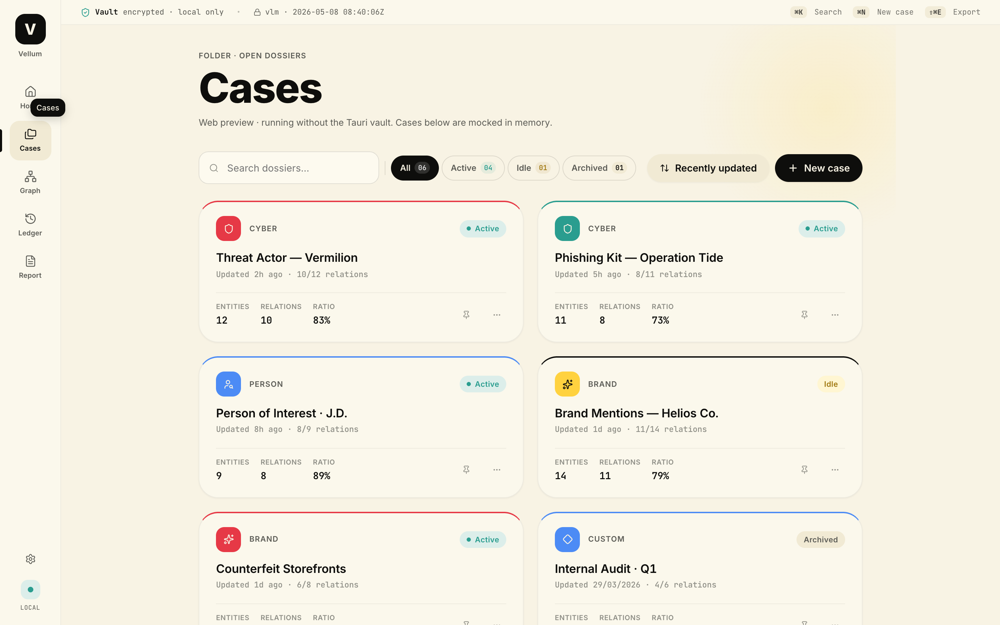
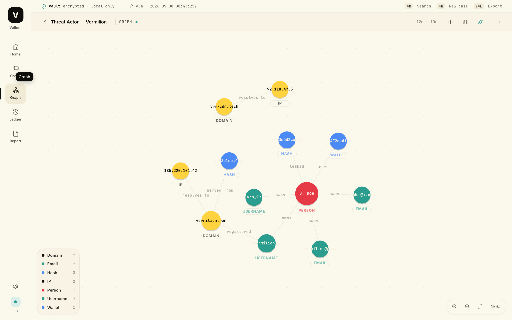
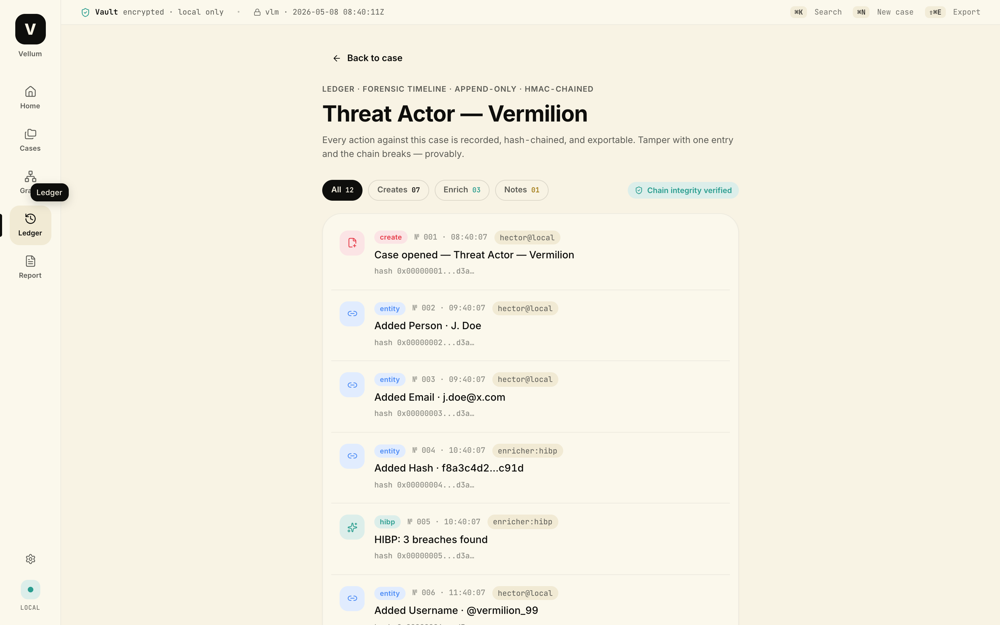
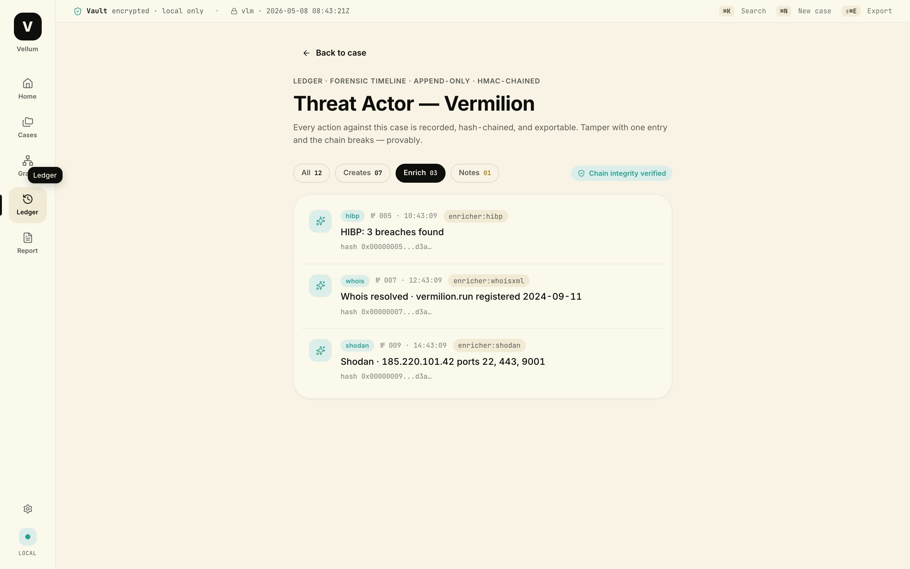
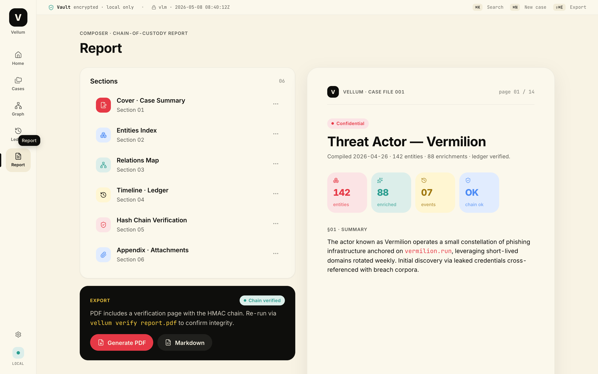
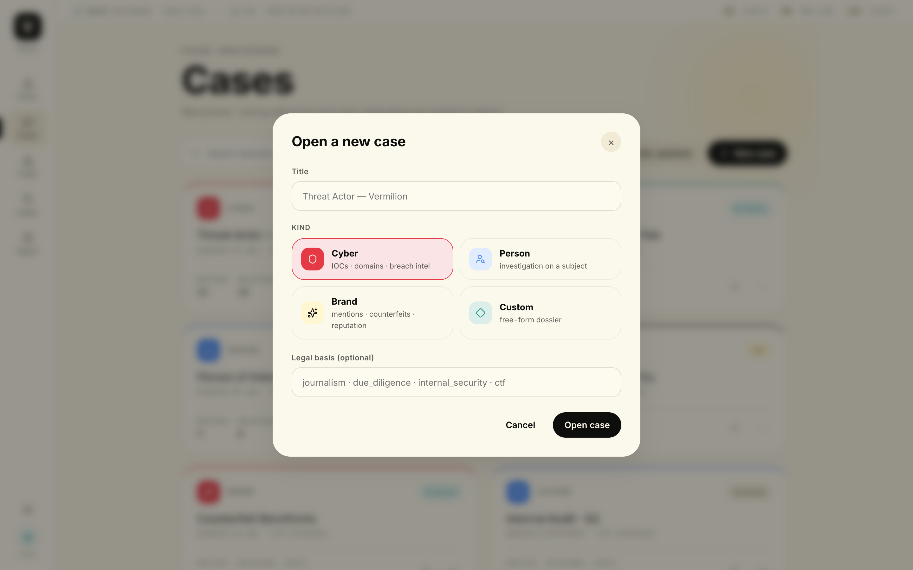
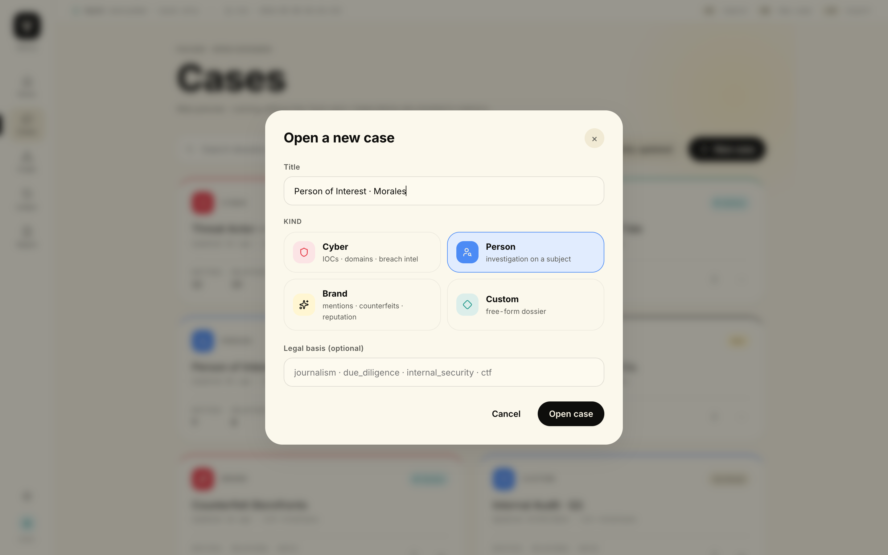
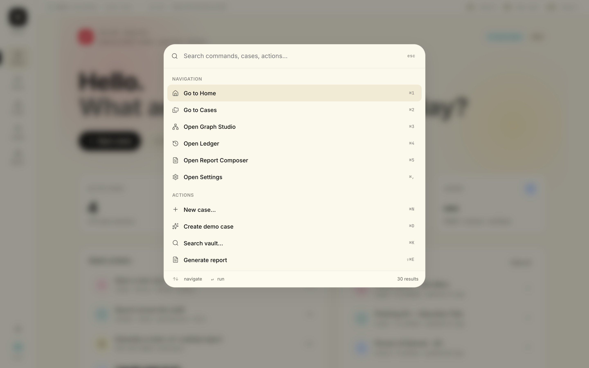
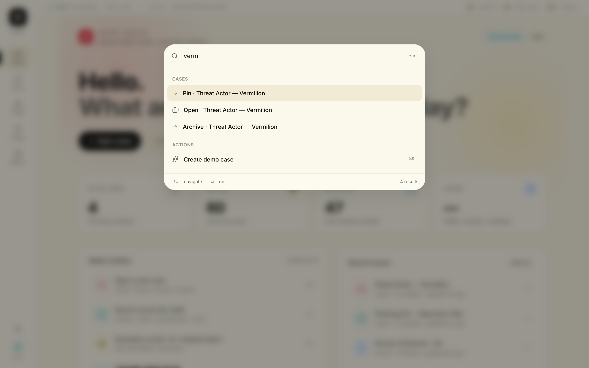

Investigation Osint
J'ai créé Vellum, un outil d'investigation desktop open-source qui place le design au même niveau que la sécurité. Construit avec Tauri et Rust, Vellum offre un environnement souverain où l'intégrité des données est garantie par un registre immuable chaîné HMAC et un chiffrement local complet.
I created Vellum, an open-source desktop investigation tool that places design on an equal footing with security. Built with Tauri and Rust, Vellum provides a sovereign environment where data integrity is ensured by an immutable HMAC-chained ledger and full local encryption.




Mon approche Product Design
En tant que concepteur de ce projet open-source, j'ai voulu créer un système qui soit à la fois un outil de précision et une vitrine de design logiciel moderne.
As the designer of this open-source project, I wanted to create a system that is both a precision tool and a showcase of modern software design.
L'esthétique de la preuve The aesthetics of proof
J'ai conçu une interface "calm by design" qui s'efface devant l'enquête. L'utilisation d'une grille éditoriale et de typographies à chasse fixe (JetBrains Mono) permet de traiter des données forensiques brutes avec la clarté d'un journal de bord premium. I designed a 'calm by design' interface that steps back to let the investigation lead. Using an editorial grid and monospaced typography (JetBrains Mono) brings clarity to raw forensic data — the precision of a premium logbook.
Système de graphes propriétaire Proprietary graph engine
Pour garantir la fluidité de l'exploration, j'ai développé un moteur de rendu de graphe sur mesure (SVG force simulation). Cela m'a permis de contrôler précisément l'expérience utilisateur — des interactions de zoom jusqu'à la hiérarchie visuelle des hubs — sans dépendre de librairies tierces trop lourdes. To guarantee smooth exploration, I developed a custom graph rendering engine (SVG force simulation). This let me precisely control the user experience — from zoom interactions to the visual hierarchy of hubs — without relying on heavy third-party libraries.
Accessibilité et vélocité Accessibility & velocity
J'ai pensé l'UX pour les "power users". Le workflow est entièrement optimisé pour le clavier via une Command Palette (⌘K), permettant de pivoter entre le graphe, la timeline et le Report Composer sans jamais lever les mains des touches. I designed the UX for power users. The workflow is fully keyboard-optimised via a Command Palette (⌘K), enabling seamless switching between the graph, timeline and Report Composer without ever lifting your hands from the keys.
Design pour la confiance Design for trust
En open-source, la transparence est reine. J'ai traduit les concepts cryptographiques complexes (comme la chaîne HMAC) en éléments d'interface tangibles et compréhensibles, renforçant la crédibilité des rapports exportés. In open source, transparency is paramount. I translated complex cryptographic concepts (such as the HMAC chain) into tangible, understandable interface elements, reinforcing the credibility of exported reports.









